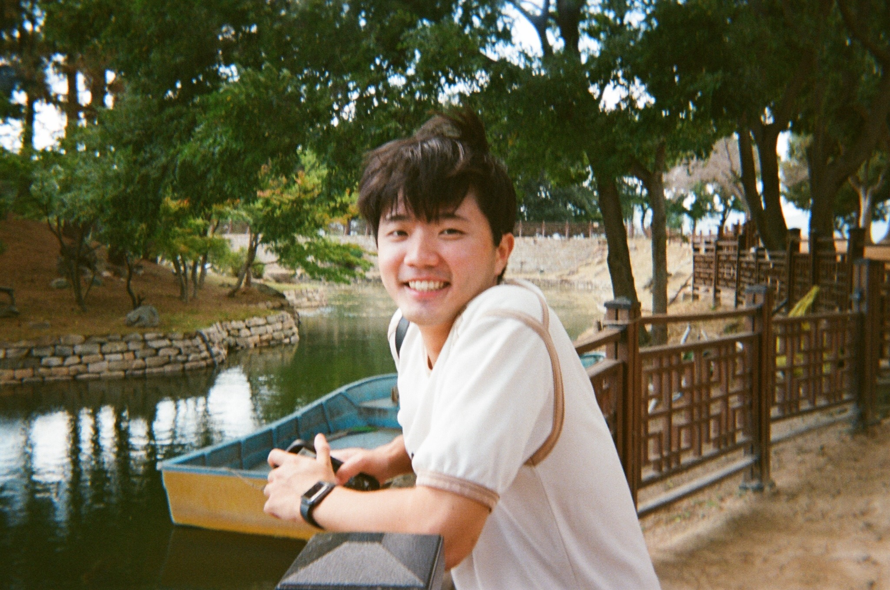

2026
Polymer-Regulated Freezing of Water Droplets Revealed by Synchrotron X-ray Imaging and Raman Spectroscopy
Published Journal of Colloid and Interface Science 729, 141826 (2027; published online in 2026).
Appearance
안현준 Ph.D. candidate in PhysicsUlsan National Institute of Science and Technology (UNIST)
I study how liquids enter materials, move through materials, or freeze. Neutron and X-ray imaging reveal these changes inside droplets, polymers, and porous solids.
At UNIST, I am studying and working with Prof. Joonwoo Jeong in the Experimental Soft Matter Physics Lab.

Quantify composition with H/D contrast.
Resolve freezing fronts and 3D microstructure.
Droplets, polymer networks, and porous materials.
H/D contrast quantifies composition and tracks liquid transport inside materials.
Hydrogen and deuterium attenuate neutrons differently. This H/D contrast lets us track composition changes inside liquids. With a known sample path length and reference attenuation coefficients, Beer–Lambert analysis quantifies composition.
Gravity shapes composition during water-vapor uptake. Neutron radiography quantifies composition fields in hygroscopic liquids and reveals orientation-dependent stratification.
Swelling and drying involve nonuniform solvent distributions. Neutron radiography resolves solvent-rich shells during swelling and residual solvent during drying, enabling quantitative tests of models coupling solvent transport and network deformation.
Capillary imbibition and evaporation occur together. Neutron radiography tracks wetting-front propagation in gypsum to examine evaporation and internal liquid redistribution.
Time-resolved radiography and CT reveal freezing fronts, trapped bubbles, and three-dimensional microstructure.
Trapped bubbles influence tip singularity formation. Synchrotron X-ray imaging links bubble entrapment to the final tip angle. Adding poly(vinyl alcohol) (PVA) rounds the apex and reduces discrete bubble entrapment.
X-ray computed tomography (CT) resolves frozen microstructure; Raman spectroscopy maps the relative PVA-associated signal.
Figure 2. Horizontal X-ray CT cross-sections of frozen pure water (a, b) and 3 wt% PVA solution (c–e). Magnified views show trapped bubbles (b), internal heterogeneity (d), and near-surface features (e).
Scale bars: 500 µm (a); 50 µm (b).
An et al. · JCIS · Figure 2 ↗Figure 3. Raman characterization of a frozen 3 wt% PVA droplet: sectioning schematic (a), spectra (b), reflection image (c), and relative PVA-associated intensity near 1450 cm⁻¹ (d).
Scale bar: 50 µm (c).
An et al. · JCIS · Figure 3 ↗4 publications shown.
Published Journal of Colloid and Interface Science 729, 141826 (2027; published online in 2026).
WCNR-12 · Springer Proceedings in Physics 348, 235–243 (2026).
Science Advances 10, eadm7315 (2024).
Selected talks, posters, and awards.
APS DSOFT Students’ Virtual Conference · Online
Contributed oral presentation · Session 4: Complex and Interfacial Flows
Conference: 10:00 a.m.–5:00 p.m. EST (UTC−5).
Session 4: 15:20–16:35 EST, 10 November 2026.
Korean Physical Society Spring Meeting ↗ · Apr 2026
Contributed oral presentation
Korean Physical Society Spring Meeting ↗ · Apr 2025
Contributed oral presentation
ITMNR-10 ↗
Poster presentation
ITMNR-10 ↗
Poster presentation
KPS Fall Meeting ↗
Poster presentation
International HANARO Symposium ↗
Poster presentation
RHINO 2025 ↗
Poster presentation
Ice at the Micro-scale ↗
Poster presentation
WCNR-12 ↗
Co-authored poster
Korean Physical Society Spring Meeting ↗
Poster presentation
We used drop-tower experiments to study how gravity affects dimple formation as wax droplets solidify.
| Period | Funding program | Project |
|---|---|---|
| 2023–2024 | National Research Foundation of Korea (NRF) – Mid-Career Researcher Program | Active self-organization of living matter under confinement with curvatures |
| 2023–2024 | National Research Foundation of Korea (NRF) – Mid-Career Researcher Program | Advanced study and application of water-based anisotropic medium: Phase behavior and control of nonequilibrium phenomena |
| 2024 | Pohang Accelerator Laboratory (PAL) – Synchrotron Radiation Utilization Research Program | X-ray imaging study of nonequilibrium soft matter: Phase transitions of water |
| 2024–2026 | National Research Foundation of Korea (NRF) – Excellent Research Program (Core Research, Type B) | Active bath: Characterization and spatiotemporal control of nonequilibrium properties |
| 2024–2026 | National Research Foundation of Korea (NRF) – Global Matching Program (Germany) | Exploring dilatancy in soft granular materials using advanced radiography techniques |
| 2024–2026 | Korea Polar Research Institute (KOPRI) – Academic-Institute Polar Research Promotion Program (PAP) | High-resolution radiography study of polar ice: Microstructure and phase transition |
ICON · NEUTRA · ENF
Experimental design, isotope contrast, attenuation analysis, and spatial composition reconstruction.
PLS-II 6C BMI · 9D · 7C
Time-resolved radiography, tomography, segmentation, and three-dimensional structural analysis.
SAXS/WAXD · PAL PLS-II 6D and 9A.
Soft Matter Physics Laboratory · Advisor: Prof. Joonwoo Jeong
Synchrotron X-ray imaging · 50-day research placement.
Multiscale Length Metrology Team · Femtosecond-laser-based length measurement · Supervisor: Prof. Jonghan Jin and Dr. Jeongjae Park
Soft Matter Physics Laboratory · Fluid dynamics in PDMS-based microfluidic devices · Supervisor: Prof. Joonwoo Jeong and Dr. Eujin Um
UNIST · Expected graduation: February 2027
Advisor: Prof. Joonwoo Jeong
UNIST · Double major
Summa cum laude
Hong Kong University of Science and Technology (HKUST)
| Teaching assistant, UNIST | Semesters |
|---|---|
| General Physics Laboratory I | Spring & Fall 2024; Spring & Fall 2025; Spring 2026 |
| Mathematical PhysicsProf. Chae Un Kim | Fall 2023 |
| Thermal and Statistical PhysicsProf. Yoon Seok Oh | Spring 2023 |
| General Physics IUndergraduate teaching assistant in Spring 2018 | Spring 2018; Spring & Fall 2022 |
| General Physics IIUndergraduate teaching assistant | Fall 2018 |
Military service · 2019–2021: Motor transport operator, 8th Fighter Wing, Republic of Korea Air Force.
I welcome collaborations on quantitative imaging, mass transport, phase transitions in soft matter or even any further discussions.